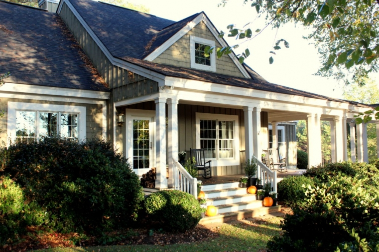
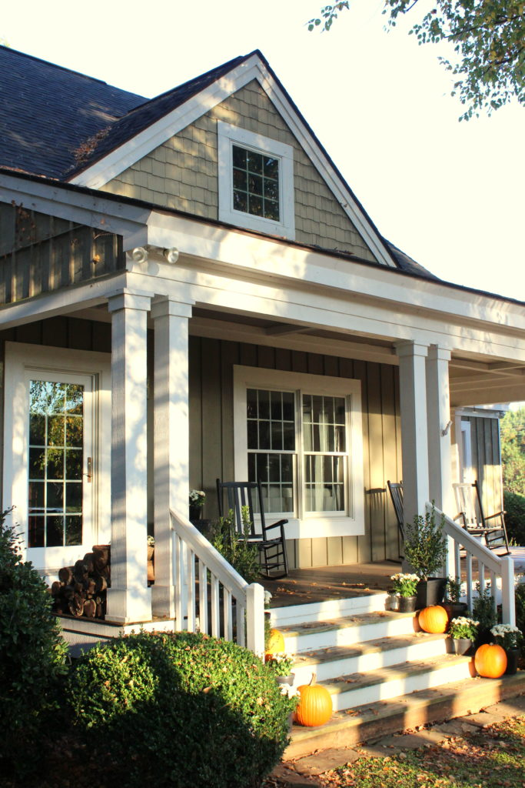
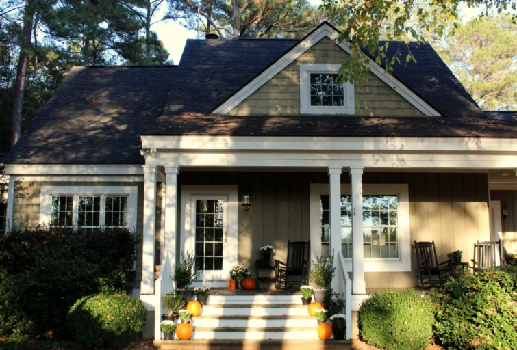

.png)
.PNG)
.PNG)
.PNG)
.PNG)
.PNG)
.JPG)
.JPG)
.PNG)
.PNG)



Trick or treat?! No tricks here today. In fact, I hope this will be a treat for you. 🙂 It has been hot hot hot here, and they are predicting a record breaking warm Halloween, so decorating for fall here in Georgia just has not felt right. Cozy blankets and hot drinks just don’t work around here these days.
So thanks to the heat, no fall decorating was done at our house in September…not even apple anything.
And then we were traveling the entire last week of September and 13 of the 31 days in October. Which is why there has been no fall tour here this year, but the good news is I have managed to get the house decorated for Halloween over those 18 other random October days. 🙂 And that’s what I want you to see today, but I have to confess, I sort of took the easy way out.
 Do you remember last year when I did an It’s the Great Pumpkin, Charlie Brown Halloween with all those cute details? Well… I’m afraid there is no cute theme this year. In my crazy few random days of decorating I resorted to….traditional, non-original pumpkins, and Heaven forbid…to orange and black accessories.
Do you remember last year when I did an It’s the Great Pumpkin, Charlie Brown Halloween with all those cute details? Well… I’m afraid there is no cute theme this year. In my crazy few random days of decorating I resorted to….traditional, non-original pumpkins, and Heaven forbid…to orange and black accessories.
And worse than that, they are everywhere.
Yes, I am hanging my head in shame.
So come on in the foyer and be prepared for a major pumpkin and orange overdose.
(I did change out the photos of the children to old ones from past trick-or-treating treks. 🙂 )
For this year’s trick-or-treating bags, I wanted to use orange paper snack cups, but I could not find any anywhere. So I just took orange paper cups and trimmed them down a bit. I think it would be cute to tie them with a green ribbon and use a leaf shaped tag on them to give them a “pumpkin” look.
I couldn’t resist Target’s $3 haunted house to add a little spooky fun to the foyer. 🙂Moving on into the family room…yes those are orange and black pillows there on the sofa.
Oh, and a pumpkin one too.
(I told you I took the easy way out. See?)
The cabinet got orange and black books in a jar and a baby pumpkin.
More pumpkins and orange and black books went on the mantel as well…
And one more Halloween photo from when the boys were young.
Now let’s go over to the other door for just a second. If you had come in it instead of the front one, you would have found this bench with its cauldron bucket of candy…
and these cute trick-or-treat bags I mailed to our children. The bags came from Target, (where else? 🙂 ) but I took the decoration off and simply glued on their initial made from cardstock.
Now let’s head into the dining room. The red check drapes have temporarily been replaced by the old black and white buffalo checked ones.
Our table setting is in orange and black this year with another Target haunted house for the centerpiece.
The black salad plates were under $2 each at Walmart.
I had to throw some orange into the dining room cabinet too.
The dinner party favors are simply sugar cookies in gift bags tied with orange and black ribbon. I wish I could share some of these snacks with you. (See why I need a treadmill?)
The Halloween tour continues on into the kitchen where you will see more black and white buffalo checks.
There is a recipe for delicious sounding pumpkin magic bars on the desk chalkboard. Have you ever tried them? Anything with sweetened condensed milk has got to be good. 🙂
Now for the last stop on this Halloween house tour…the screened porch.
I used a bit more white out there to tone down all the orange and black.
And yes, the pillows really are orange. They just look red in the photos.
I had planned to make chili or homemade soup for our Halloween dinner, but with the predicted heat, I have changed our menu. We are going to be grilling steaks instead. 🙂
Hopefully, it will cool off some by dinner time so that we can enjoy it on the porch.
I used our old orange plates with some pumpkin ones I purchased a few years ago on sale at Sur la Table.
And I wrote silly names on the kraft paper runner just for fun…
Emma Ghost, Hal O. Wheen…
Barry D. Bones
and a few others.
And that brings us to the end of our Halloween tour. Thank you so much for stopping by today (and for putting up with all the pumpkins and orange color overload!) I hope you have something fun planned for Halloween night…perhaps something that involves candy. 🙂
Until next time…


.PNG)
Beautiful,as always,Kelly! I love the traditional black and orange Halloween decorations! Your house IS magazine worthy! Guess what I found in the Target 70% off aisle….those chalkboard houses! I was so excited! Imitation is the greatest form of flattery so I will be flattering you next Halloween! Next on my list to find is those black and white napkins. Your holiday decorating posts are my favorites!
I can’t believe I almost missed this! All I can say is ” it’s good to be back home” with you and yours! I really have been missing your house! Made my Halloween especially since due to all my projects I still haven’t gotten all my fall decorations out and it has been so hot here– hard to get in the mood! Thank you for sharing — wouldn’t be Halloween without seeing your decorations! 🎃🎃🎃🎃🎃
I hope your chocolate didn’t melt! Even when you take the “easy way out” it looks well-designed and thoughtful.
I love the orange and black and it’s always fun to see your black and white checked curtains and accessories. Great job…retirement has definitely kept you busy! 🙂
xo,
Karen
Kelly, it has been a while since I left a message, but I had to this time. I love the pumpkin plates in your design on the porch. Sometimes simple is the best way to go considering how busy you’ve been traveling. I hope you have a blessed Halloween grillling streaks.
I have no problem with the traditional colors for Halloween. I do like those creamy white pumpkins, but the others are a bit overdone these days, so why not go back to the old? I would call your decor this year as tastefully done! And steaks for dinner – why not!
We aren’t anticipating any trick or treaters here at the lake, since I don’t think there are any children living around us. I will miss having my daughter,her husband and the two grands coming for dinner and trick or treating though. 🙁 They will still be in our old neighborhood, because the other grandparents live just two streets away from our old house. We hope to swing by to see the kiddos, then grab dinner before heading home.
Hope you have a spooktacular evening!
I love everything you have done!
This doesn’t look like the easy way out to me. Says the gal who has a few white pumpkins (real and fake) dispersed throughout her house. 😉 Oh, and an orange plaid dish towel. Haha. 🙂 No kiddos here and I don’t get any trick or treaters where I live. I love the orange and black though. It looks great and I ALWAYS love to see how you set your tables, etc. It’s always so inspiring. And fun!! It’s warm here in Virginia too, but more bearable than Georgia. I am loving it.
Love the porch table! So fun!
As someone with a Halloween birthday, and 74 of them,I feel I’m a bit of an expert on all things Halloween . You did a 5 star job of decorating your home for this fun holiday. THANKS for all of your great ideas!
Simply lovely, as usual, Kelly! You’ve scored another win with taste and elegance that is always, always in style. I’m not a big fan of Halloween, but a huge fan of fall in general, which has not arrived in northeastern Oklahama either with this heat, but you’ve made it all so festive and charming. Glad you and your husband are enjoying retirement and traveling.
Hi Kelly! I love love love your Halloween decor! So beautiful and colourful! For me it is as amazing as last year! 🙂 I wish you and your family a… terrific Halloween! Xoxo
Claire
Happy Hallowe’en, Kelly! Loving the decor, perfect as usual, and the names written on the table are just too clever. Thanks for the tour and inspiration
Love your look, but find myself wondering how do you store all the decorative items when not in use. Coming up with past Halloween photos of my children would be an exhaustive project. Do you have a link on your site that details how you organize all the “orange” later on? Thanks so much.
Kelly, I really like your scaled down Halloween decorations! They are traditional but are shown in a fresh, inviting way. Your creations are always fun and eye catching; I like how you have so many great items to pull out to use through out the seasons.
Your house always looks great and what you call “easy way out” looks magazine worthy to me! I am so ready for some cool weather here in Georgia!!! Happy Halloween!
It’s all really pretty — and seasonal and livable. Can you bottle and sell me some of your boundless energy! 😀
Are your wicker porch pieces gray or white? The pieces are so versatile.
Kelly, I loved last years Charlie Brown theme but I also love the simplicity of this year. Your home always looks so cozy and warm.
Love all this orange and black… as always everything at your house is magazine worthy! You don’t have to have a theme for things to be adorable! Thanks to Kathy I have precious dessert plates for tonight featuring pumpkins in a sweet red wagon! I just put on a huge crock pot of the Wendy’s recipe chili. My kids, grandkids and son’s girlfriend will be here tonight. Won’t we have fun eating it with the air conditioner running?
We live in Transylvania County so Halloween is HUGE here! There was a festival on Saturday but I was at a ballgame and didn’t get to go. Three downtown streets are blocked off for trick or treating. While my street is not blocked off it is the connector street between two of them. I have 250 pieces of candy ( was a 275 piece bag but somehow 25 disappeared???) A friend at church told me yesterday that she has 1000 pieces…. What????…… and I took a walk yesterday afternoon and someone on that same street told me they have 1200 pieces ready. Looks like I need to make a candy run!
Have a spooktacular evening sweet Kelly!
Love it…very festive. Thanks for sharing. My favorite is always the screened porch.
You have captured the Halloween spirit in a spooky yet stylish way! Black and orange is a classic look that brings me back to my own days (and nights) of trick or treating. As always, you have created an inviting, and in this case, a bewitching home tour. Thanks for sharing – love all of it! 🎃
I just love it! You can’t go wrong with traditional orange and black on Halloween.
Well Kelly, “your taking it easy” is way better than mine…I have double front door and put a Fall wreath on each…the end. We did much better decorating our trunk for Trunk or Treat at church yesterday. So you are doing good (as always).
I always love all of your blogs, but the holiday ones are my favorite! Happy Halloween! I hope it’s a bootiful day….☺️🎃
Love your home!! Thanks for sharing!! I hope it cools down in Georgia before Thanksgiving!!! LOL!!!
I LOVE your pared down Halloween, Kelly! Your home is so beautiful and I love how you decorate it for holidays. Orange and black is the color of the day and your use of it is so sophisticated and elegant. Happy Halloween!
Loving all the orange pumpkins!!
You might think you took the easy way out but you did WAY more decorating for Halloween than I did! I love the traditional orange and black everywhere and I love the buffalo checks. You always do such a beautiful job decorating! Happy Halloween!
Shelley
Your “ho hum” is my WOW! I love every bit of it. As usual, so inspiring. I hope that you have a happy Halloween!
These are my favorite posts of yours – your own home tours! Your home looks wonderfully Halloweeny! Thanks for sharing!
Looking really nice ♥
Hi Kelly,
Wonderful and imaginative as usual. We do not have our house decorated (Halloween is not quite as big in Australia) but we do have the candy ready. It is 17:45 now, and we expect the trick or treaters to be coming by soon …
Even your scaled down version is adorable. I have to say this warm weather loving girl is ready for some cooler days. It is just not fall at all. Thinking it may be one of those years when we go straight to Winter.
I do love those black and white buffalo check curtains though. Just so pretty.
I am not a fan of orange and black together (mainly because it is our rival’s color as a Sooner grad), but you actually make it just delightful. I too used the Target spooky house. When my children were growing up, we lived in a big old Victorian in a little Kansas town where Halloween was THE biggest holiday. So I painted 209 over the door of the Halloween house, as a nod to our old house in the Halloween town. All five of my grown children commented on it. Mom win! I love your tours. I LOVE that you are enjoying your retirement. Happy Fall (if it EVER gets here too.) Lori Lucas
Thanks for sharing your fun Halloween house. I love it!